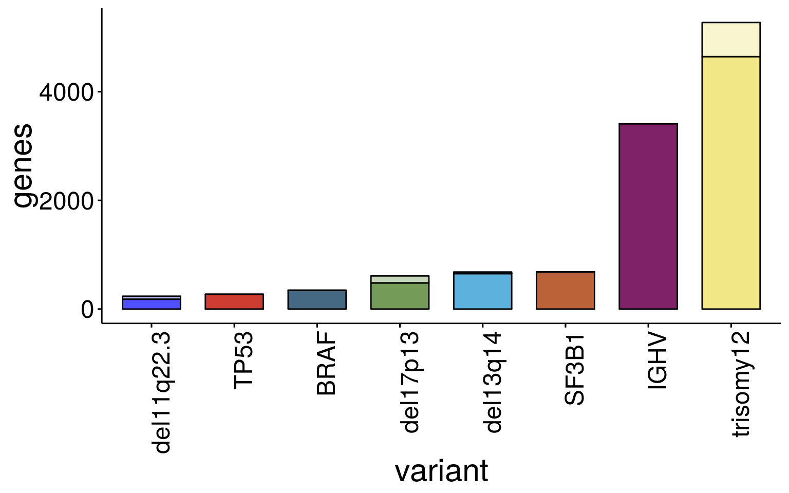

Summary DE genes
almut
14 November 2019
Last updated: 2022-04-27
Checks: 6 1
Knit directory: transcriptome_cll/
This reproducible R Markdown analysis was created with workflowr (version 1.4.0). The Checks tab describes the reproducibility checks that were applied when the results were created. The Past versions tab lists the development history.
The R Markdown file has unstaged changes. To know which version of the R Markdown file created these results, you’ll want to first commit it to the Git repo. If you’re still working on the analysis, you can ignore this warning. When you’re finished, you can run wflow_publish to commit the R Markdown file and build the HTML.
Great job! The global environment was empty. Objects defined in the global environment can affect the analysis in your R Markdown file in unknown ways. For reproduciblity it’s best to always run the code in an empty environment.
The command set.seed(20190511) was run prior to running the code in the R Markdown file. Setting a seed ensures that any results that rely on randomness, e.g. subsampling or permutations, are reproducible.
Great job! Recording the operating system, R version, and package versions is critical for reproducibility.
Nice! There were no cached chunks for this analysis, so you can be confident that you successfully produced the results during this run.
Great job! Using relative paths to the files within your workflowr project makes it easier to run your code on other machines.
Great! You are using Git for version control. Tracking code development and connecting the code version to the results is critical for reproducibility. The version displayed above was the version of the Git repository at the time these results were generated.
Note that you need to be careful to ensure that all relevant files for the analysis have been committed to Git prior to generating the results (you can use wflow_publish or wflow_git_commit). workflowr only checks the R Markdown file, but you know if there are other scripts or data files that it depends on. Below is the status of the Git repository when the results were generated:
Ignored files:
Ignored: .Rhistory
Ignored: .Rproj.user/
Ignored: output/figures/r_objects/BRAF/enrichment/
Untracked files:
Untracked: analysis/de_analysis_treatment.Rmd
Untracked: analysis/de_diagnosis_time_sampling.Rmd
Untracked: data/diagnosis_information.csv
Untracked: docs/figure/de_analysis_treatment.Rmd/
Untracked: output/de_genes_all_pretreatment.xlsx
Untracked: output/desRes_020422.RData
Untracked: output/diff_genes/pretreatment/
Untracked: output/figures/r_objects/TP53/venn_pair.rds
Unstaged changes:
Modified: analysis/IGHV.Rmd
Modified: analysis/TP53.Rmd
Modified: analysis/summary_de_genes.Rmd
Modified: output/figures/paper_fig/figure_TP53.pdf
Modified: output/figures/paper_fig/figure_TP53.svg
Modified: output/figures/paper_fig/generate_figures.Rmd
Modified: output/figures/r_objects/TP53/enrich_dot2.rds
Modified: output/figures/r_objects/TP53/enrich_net_hm.rds
Modified: output/figures/r_objects/TP53/enrich_net_kegg.rds
Modified: output/figures/r_objects/summary_de_genes_IGHV_tri12.rds
Modified: output/figures/r_objects/summary_de_genes_all.rds
Note that any generated files, e.g. HTML, png, CSS, etc., are not included in this status report because it is ok for generated content to have uncommitted changes.
These are the previous versions of the R Markdown and HTML files. If you’ve configured a remote Git repository (see ?wflow_git_remote), click on the hyperlinks in the table below to view them.
| File | Version | Author | Date | Message |
|---|---|---|---|---|
| html | 16605fa | aluetge | 2021-05-22 | complie rmds to show plots |
| html | 026e8e9 | aluetge | 2019-11-18 | Build site. |
| html | e20c885 | aluetge | 2019-11-14 | Build site. |
| Rmd | 7a81840 | aluetge | 2019-11-14 | wflow_publish(“analysis/summary_de_genes.Rmd”) |
| html | 794365a | aluetge | 2019-11-14 | Build site. |
| Rmd | e8e7a32 | aluetge | 2019-11-14 | wflow_publish(“analysis/summary_de_genes.Rmd”) |
| html | f9c1040 | aluetge | 2019-11-14 | Build site. |
| Rmd | 225f170 | aluetge | 2019-11-14 | wflow_publish(“analysis/summary_de_genes.Rmd”) |
Summary DE genes by variants
Aim: Generate a summary plot giving an overview on the number of differntially expressed genes / number upreagulated / number downregulated genes and chromosomal distribution for CNVs.
libraries
suppressPackageStartupMessages({
library(tidyverse)
library(ggplot2)
library(here)
library(ggpubr)
library(ggsci)
library(RColorBrewer)
library(circlize)
library(reshape2)
library(ggsci)
library(DESeq2)
})data
data_dir <- here("data")
output_dir <- here("output")
figure_dir <- here("output/figures")
#dds data set. gene expression data + patmetadata
load(paste0(data_dir, "/ddsrnaCLL_150218.RData"))
#load meta data including genotyping info
load(paste0(data_dir, "/patmeta_170324.RData"))
excluded_columns <- c("HIPO.ID","PID", "gender","project", "diagnosis", "date.of.diagnosis", "treatment", "date.of.first.treatment", "IGHV.status","Methylation_Cluster")
patMeta <- as.tibble(patMeta) %>% filter(Patient.ID %in% ddsCLL$PatID) %>% dplyr::select(-one_of(excluded_columns))Warning: `as.tibble()` is deprecated, use `as_tibble()` (but mind the new semantics).
This warning is displayed once per session.variants <- patMeta %>% dplyr::select(-Patient.ID) %>% dplyr::select(-Chromothripsis) %>%
mutate_if(is.factor, as.character) %>%
mutate_if(is.character, as.numeric) %>%
dplyr::select(colnames(.)[colSums(.,na.rm = TRUE) > 4]) %>%
colnames()
var_add <- variants[!variants %in% names(colData(ddsCLL))]
rownames(patMeta) <- patMeta$Patient.IDWarning: Setting row names on a tibble is deprecated.patMeta <- patMeta[colData(ddsCLL)$PatID,]
cd <- cbind(colData(ddsCLL), patMeta[,var_add])
colData(ddsCLL) <- cd
#variants <- c( "trisomy12", "del13q14", "del8p12", "gain8q24", "del11q22.3", "del17p13", "BRAF", "NOTCH1", "SF3B1","TP53", "ATM", "MED12","IGHV")
variants <- c(variants, "IGHV")Summarize de genes in a table
#Function to summarize de genes
variant_stats <- function(variant, chr){
diff_genes <-read.csv(file=paste0(output_dir, "/diff_genes/pretreatment/", variant, "_diffGenes.csv"))
sig_genes <- as.tibble(diff_genes) %>% filter(padj < 0.05)
up_genes <- sig_genes %>% filter(log2FoldChange > 0) %>% mutate(chrom = rowData(ddsCLL)$chromosome[which(rownames(ddsCLL) %in% X)])
dn_genes <- sig_genes %>% filter(log2FoldChange < 0) %>% mutate(chrom = rowData(ddsCLL)$chromosome[which(rownames(ddsCLL) %in% X)])
chr_up <- ifelse(!is.na(chr), length(which(up_genes$chrom %in% chr)), 0)
chr_dn <- ifelse(!is.na(chr), length(which(dn_genes$chrom %in% chr)), 0)
summary <- tibble(
variant = variant,
n_genes = nrow(sig_genes),
up_genes = nrow(up_genes),
dn_genes = nrow(dn_genes),
nr_up = chr_up,
nr_dn = chr_dn,
nr_chrom = chr_dn + chr_up,
nr_other = n_genes - chr_dn - chr_up
)
}
# Variant chromosomal location
chromo <- c( "2", "8", "8", "11", "12", "13", "15", "17", NA, NA, NA, NA, NA, NA, NA, NA, NA, NA, NA, NA, NA, NA, NA, NA)
input <- cbind(variants, chromo)
input variants chromo
[1,] "gain2p25.3" "2"
[2,] "del8p12" "8"
[3,] "gain8q24" "8"
[4,] "del11q22.3" "11"
[5,] "trisomy12" "12"
[6,] "del13q14" "13"
[7,] "del15q15.1" "15"
[8,] "del17p13" "17"
[9,] "BRAF" NA
[10,] "KRAS" NA
[11,] "NOTCH1" NA
[12,] "SF3B1" NA
[13,] "TP53" NA
[14,] "gain14q32" NA
[15,] "ACTN2" NA
[16,] "ATM" NA
[17,] "EGR2" NA
[18,] "KLHL6" NA
[19,] "MED12" NA
[20,] "MGA" NA
[21,] "NFKBIE" NA
[22,] "PCLO" NA
[23,] "XPO1" NA
[24,] "IGHV" NA summary <- mapply(variant_stats, variants, chromo)
sum_dat <- data.frame(matrix(unlist(summary), nrow=length(variants), byrow=T),stringsAsFactors=FALSE)
colnames(sum_dat) <- c("variant", "n_genes", "up_genes", "dn_genes", "nr_up", "nr_dn", "nr_chrom", "nr_other")
sum_dat <- sum_dat %>% filter(as.numeric(n_genes) >= 200)
sum_order <- as.tibble(sum_dat) %>% arrange(desc(-1*as.numeric(n_genes))) %>% dplyr::select(variant)
#sum_dat_long <- melt(sum_dat[,c("variant","up_genes", "dn_genes")], id.vars = c("variant")) #, variable_name = c("up_genes", "dn_genes"))
sum_dat_long <- melt(sum_dat[,c("variant","nr_other", "nr_chrom")], id.vars = c("variant")) #, variable_name = c("up_genes", "dn_genes"))
colnames(sum_dat_long) <- c("variant", "location", "genes")
sum_dat_long$dir_color <-paste0(sum_dat_long$variant, "_", sum_dat_long$location)
sum_dat_long$genes <- as.numeric(as.character(sum_dat_long$genes))
sum_dat_long <- as.tibble(sum_dat_long) %>% arrange(desc(genes)) %>% mutate(group=ifelse(variant %in% c("trisomy12", "IGHV"), 1, 2))Plots
Summary all variants
col_pal1 <- pal_igv(palette = c("default"), alpha = 1)(nrow(sum_dat))
col_pal2 <- pal_igv(palette = c("default"), alpha = 0.4)(nrow(sum_dat))
color <- c(col_pal1, col_pal2)
color <- sort(color)
#pdf(file=paste0(figure_dir, "/sum_diffGenes_0.05_2.pdf"), width=8, height=5)
ggbarplot(sum_dat_long[order(match(sum_dat_long$variant, sum_order$variant)),], "variant", "genes",
fill = "dir_color", palette = color,
label = FALSE, font.x =23 ,font.y = 23, font.tickslab = 18, x.text.angle = 90, legend = "none") 
#dev.off()IGHV and trisomy12
sum_dat_long1 <- as.tibble(sum_dat_long) %>% filter(variant %in% c("trisomy12", "IGHV"))
#pdf(file=paste0(figure_dir, "/sum_diffGenes_noTsig_IGHVTri12.pdf"), width=5, height=2.3)
p1 <- ggbarplot(sum_dat_long1[order(match(sum_dat_long1$variant, sum_order$variant)),], "variant", "genes",
fill = "dir_color", palette = color[c(1:4)],
label = FALSE, font.x =23 ,font.y = 23, font.tickslab = 18, x.text.angle = 0, legend = "none", rotate = T)
#dev.off()
p1
saveRDS(p1, file = paste0(output_dir, "/figures/r_objects/summary_de_genes_IGHV_tri12.rds"))All other
sum_dat_long2 <- as.tibble(sum_dat_long) %>% filter(!variant %in% c("trisomy12", "IGHV")) %>% filter
#pdf(file=paste0(figure_dir, "/sum_diffGenes_noTsig.pdf"), width=6, height=7.5)
p2 <- ggbarplot(sum_dat_long2[order(match(sum_dat_long2$variant, sum_order$variant)),], "variant", "genes",
fill = "dir_color", palette = color[c(5:50)],
label = FALSE, font.x =23 ,font.y = 23, font.tickslab = 18, x.text.angle = 0, legend = "none", rotate = T)
#dev.off()
p2
saveRDS(p2, file = paste0(output_dir, "/figures/r_objects/summary_de_genes_all.rds"))summary table
#pdf(file=paste0(output_dir,"/sum_diffGenes_table.pdf"), width=5, height=7.5)
sum_dat variant n_genes up_genes dn_genes nr_up nr_dn nr_chrom nr_other
1 del11q22.3 237 122 115 4 52 56 181
2 trisomy12 5273 2660 2613 609 19 628 4645
3 del13q14 682 216 466 4 26 30 652
4 del17p13 610 398 212 29 100 129 481
5 BRAF 347 268 79 0 0 0 347
6 SF3B1 685 426 259 0 0 0 685
7 TP53 273 136 137 0 0 0 273
8 IGHV 3410 1824 1586 0 0 0 3410#dev.off()
sessionInfo()R version 3.6.3 (2020-02-29)
Platform: x86_64-pc-linux-gnu (64-bit)
Running under: Ubuntu 16.04.7 LTS
Matrix products: default
BLAS: /usr/lib/libblas/libblas.so.3.6.0
LAPACK: /usr/lib/lapack/liblapack.so.3.6.0
locale:
[1] LC_CTYPE=de_DE.UTF-8 LC_NUMERIC=C
[3] LC_TIME=de_DE.UTF-8 LC_COLLATE=de_DE.UTF-8
[5] LC_MONETARY=de_DE.UTF-8 LC_MESSAGES=de_DE.UTF-8
[7] LC_PAPER=de_DE.UTF-8 LC_NAME=C
[9] LC_ADDRESS=C LC_TELEPHONE=C
[11] LC_MEASUREMENT=de_DE.UTF-8 LC_IDENTIFICATION=C
attached base packages:
[1] parallel stats4 stats graphics grDevices utils datasets
[8] methods base
other attached packages:
[1] DESeq2_1.24.0 SummarizedExperiment_1.14.0
[3] DelayedArray_0.10.0 BiocParallel_1.18.0
[5] matrixStats_0.54.0 Biobase_2.44.0
[7] GenomicRanges_1.36.0 GenomeInfoDb_1.20.0
[9] IRanges_2.18.1 S4Vectors_0.22.0
[11] BiocGenerics_0.30.0 reshape2_1.4.3
[13] circlize_0.4.6 RColorBrewer_1.1-2
[15] ggsci_2.9 ggpubr_0.2
[17] magrittr_1.5 here_0.1
[19] forcats_0.4.0 stringr_1.4.0
[21] dplyr_0.8.1 purrr_0.3.2
[23] readr_1.3.1 tidyr_0.8.3
[25] tibble_2.1.3 ggplot2_3.1.1
[27] tidyverse_1.2.1
loaded via a namespace (and not attached):
[1] colorspace_1.4-1 rprojroot_1.3-2 htmlTable_1.13.1
[4] XVector_0.24.0 GlobalOptions_0.1.0 base64enc_0.1-3
[7] fs_1.3.1 rstudioapi_0.10 bit64_0.9-7
[10] AnnotationDbi_1.46.0 lubridate_1.7.4 xml2_1.2.0
[13] splines_3.6.3 geneplotter_1.62.0 knitr_1.23
[16] Formula_1.2-3 jsonlite_1.6 workflowr_1.4.0
[19] broom_0.5.2 annotate_1.62.0 cluster_2.1.2
[22] compiler_3.6.3 httr_1.4.0 backports_1.1.4
[25] assertthat_0.2.1 Matrix_1.3-4 lazyeval_0.2.2
[28] cli_1.1.0 acepack_1.4.1 htmltools_0.3.6
[31] tools_3.6.3 gtable_0.3.0 glue_1.3.1
[34] GenomeInfoDbData_1.2.1 Rcpp_1.0.1 cellranger_1.1.0
[37] nlme_3.1-152 xfun_0.7 rvest_0.3.4
[40] XML_3.98-1.20 zlibbioc_1.30.0 scales_1.0.0
[43] hms_0.4.2 yaml_2.2.0 memoise_1.1.0
[46] gridExtra_2.3 rpart_4.1-15 latticeExtra_0.6-28
[49] stringi_1.4.3 RSQLite_2.1.1 genefilter_1.66.0
[52] checkmate_1.9.3 shape_1.4.4 rlang_0.3.4
[55] pkgconfig_2.0.2 bitops_1.0-6 evaluate_0.14
[58] lattice_0.20-38 labeling_0.3 htmlwidgets_1.3
[61] bit_1.1-14 tidyselect_0.2.5 plyr_1.8.4
[64] R6_2.4.0 generics_0.0.2 Hmisc_4.2-0
[67] DBI_1.0.0 pillar_1.4.1 haven_2.1.0
[70] whisker_0.3-2 foreign_0.8-76 withr_2.1.2
[73] survival_2.44-1.1 RCurl_1.95-4.12 nnet_7.3-16
[76] modelr_0.1.4 crayon_1.3.4 rmarkdown_1.13
[79] locfit_1.5-9.1 grid_3.6.3 readxl_1.3.1
[82] data.table_1.12.2 blob_1.1.1 git2r_0.25.2
[85] digest_0.6.19 xtable_1.8-4 munsell_0.5.0